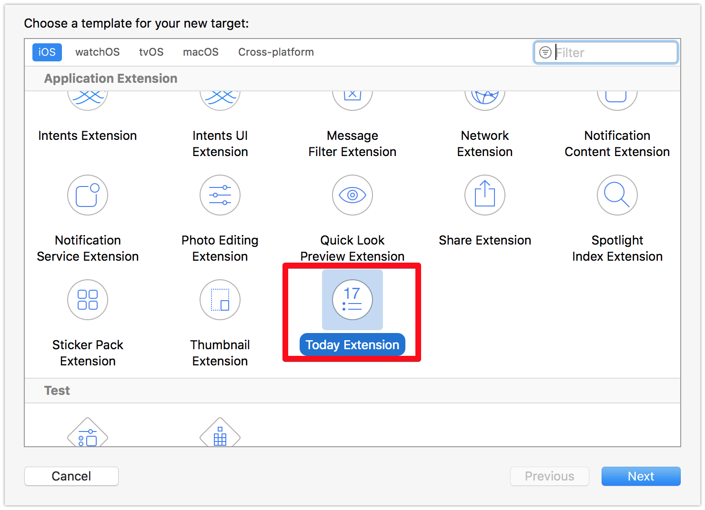

Widget
iOS11.3을 사용하고 있는 iPhone7 에서의 Widget 화면입니다. 앱 서비스 특징에 따라 위젯이 있으면 편리한 경우가 있습니다.
이번에 세번째로 52시간 근무시간 제도 시행에 맞춰 근무 시간을 체크할 수 있는 퇴근요정 앱을 배포했는데요.
다음 버전에서는 위젯도 제공하면 좋을 것 같아 공부도 할 겸 포스팅을 진행합니다.
Widget Target 생성
위젯을 개발할 앱 프로젝트를 XCode에서 Open합니다.
File > New > Target 을 클릭합니다.

Today Extension을 선택합니다. TodayExtension이 Widget을 말합니다.
Product Name을 입력합니다. 저는 그냥 Widget으로 만들었어요.
Target을 Widget으로 변경 후, 실행해봅니다.

- 위젯 편집화면에서 WIDGET이 추가되었으며, 노출하게 설정하면 다음과 같이
Hello World를 노출합니다.


UI
Widget의 UI는 스토리보드를 이용합니다. Target 생성을 하면 자동으로 스토리보드 1개, 컨트롤러 1개, plist 1개가 추가되네요.
XCode가 만들어준 MainInterface.storyboard에 UI를 그려줍니다
이걸 빌드하면

이렇게 나옵니다!!
Controller
import UIKit
import NotificationCenter
class WidgetViewController: UIViewController, NCWidgetProviding {
override func viewDidLoad() {
super.viewDidLoad()
// Do any additional setup after loading the view from its nib.
}
override func didReceiveMemoryWarning() {
super.didReceiveMemoryWarning()
// Dispose of any resources that can be recreated.
}
func widgetPerformUpdate(completionHandler: (@escaping (NCUpdateResult) -> Void)) {
// Perform any setup necessary in order to update the view.
// If an error is encountered, use NCUpdateResult.Failed
// If there's no update required, use NCUpdateResult.NoData
// If there's an update, use NCUpdateResult.NewData
completionHandler(NCUpdateResult.newData)
}
}
위 코드는 XCode에서 TodayExtension Target 생성시 자동으로 생성되는 템플릿 코드입니다.
viewDidLoad와 didReceiveMemoryWarning의 경우 일반 뷰컨트롤러와 별다를게 없습니다.
중요한건 widgetPerformUpdate 메소드 입니다. 위젯 페이지에서의 스크롤 등 위젯 업데이트가 필요한 경우 호출됩니다.
위 메소드에서 위젯 뷰에서 보여줄 내용을 업데이트 하면 됩니다.
자 그러면, 이제 WidgetViewController에서 기존 앱에서 사용하던 모듈을 가져와서 UI를 업데이트 작업을 하면 될 것 같은데..?
자동완성이 안되죠.
가져올 모듈 파일을 열고 Target membership을 설정해줘야합니다.

쨘. 그럼 이제 자동완성이 되지요.
망했다
기존 근무시간 데이터를 SQlite3를 이용해서 관리를 하고있었고, sharedInstance를 통해 CRUD를 진행중이었습니다.
위젯에서 불러오려고 하니… 위젯은 DB를 못읽어..오는 것..같네요.. :)
위젯에서는 API Request를 통해 UI를 갱신하는게 바람직해 보입니다. ㅠㅜ